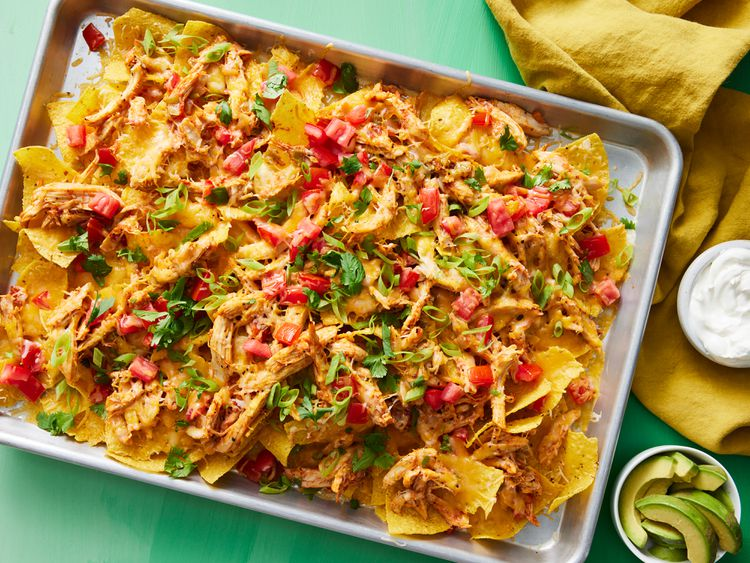

Chicken Nachos

Description
These chicken nachos are super simple to whip up, tasty, and guaranteed to impress! They're filling enough to stand alone as a meal.
The chicken topping brings all the flavor, and it also works great as a filling for tacos and quesadillas. I suggest pairing them with sour cream and guacamole, but feel free to get creative!
Ingredients
- 3 tablespoons canola oil
- 6 green onions, sliced, white parts and tops separated
- 2 cloves garlic, crushed
- 1 shredded, cooked, whole chicken breast
- salt and pepper to taste
- 1 cup salsa
- ½ (12 ounce) package tortilla chips
- 1 (8 ounce) package shredded Cheddar/Monterey Jack cheese blend
- ½ large tomato, diced
Steps
- Start by collecting all your ingredients. Preheat your oven to 350°F (175°C).
- In a deep 12-inch skillet, heat some oil over medium heat. Toss in the white parts of the green onions and garlic, cooking and stirring until the onions are nice and tender.
- Next, add in the shredded chicken, salt, and pepper, mixing everything until it’s well combined. Then, stir in the salsa.
- Spread out the tortilla chips on a big baking sheet. Spoon the chicken mixture over the chips, and sprinkle shredded cheese and diced tomatoes on top.
- Pop it in the oven and bake until the cheese is melted, which should take about 10 minutes. Once it’s done, take it out and sprinkle the green onion tops over it before serving.